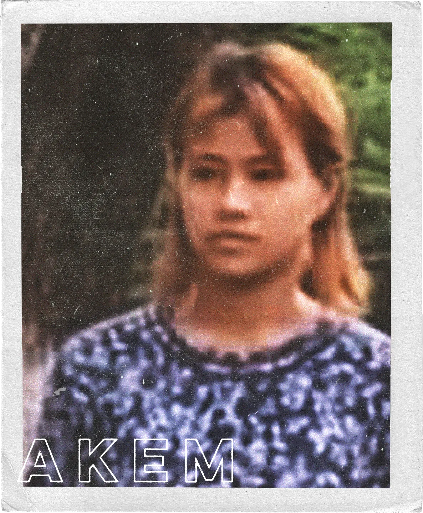
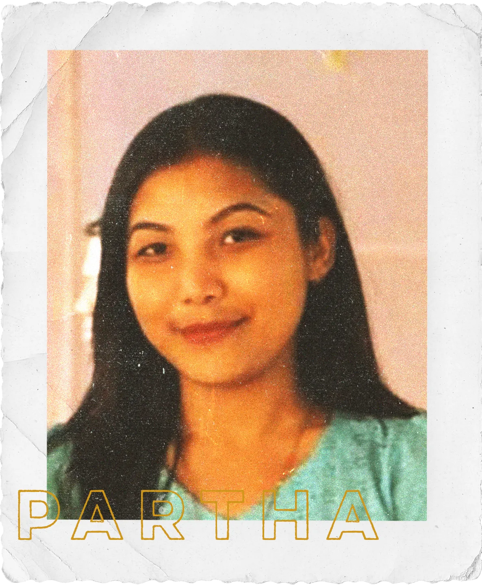
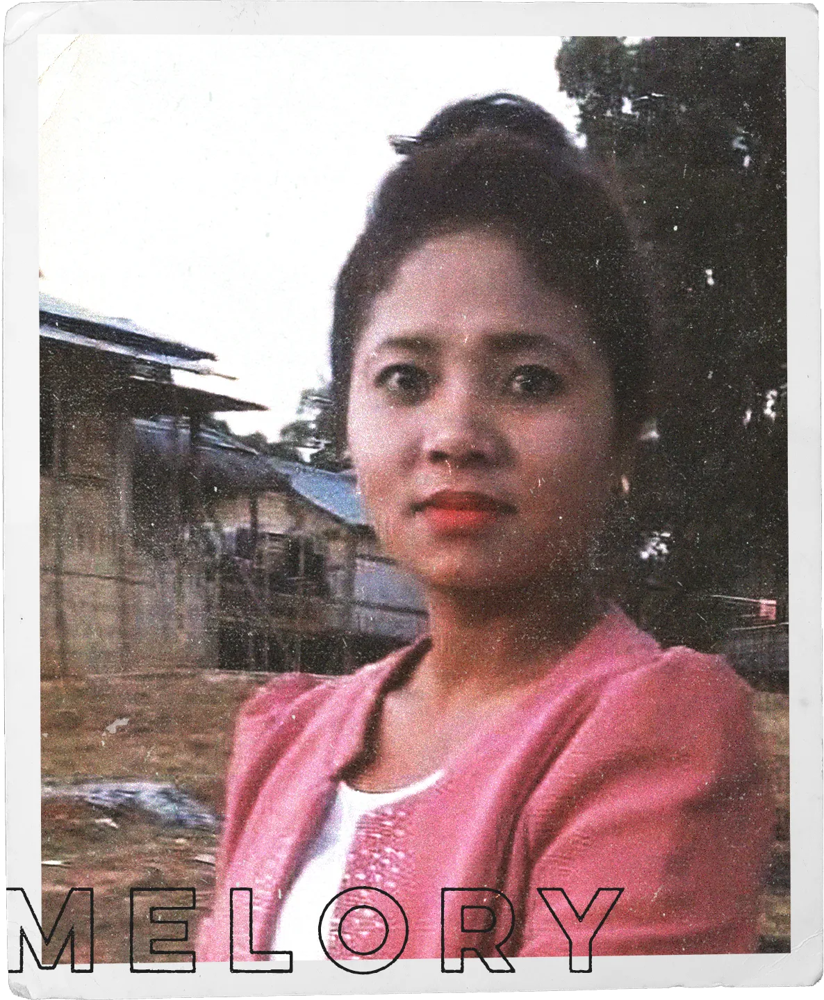

“কারাগারের চার দেয়ালের বাইরে শেষবার আমি আমার মেয়েকে দেখেছি ৬১২ দিন আগে,” ২০২৫ সালের ১২ ডিসেম্বর এক সাক্ষাৎকারে চোখের পানি ধরে রাখতে পারছিলেন জিং নুন মাওয়ি বম। বলছিলেন, “কারাগার তার ভবিষ্যৎ ধ্বংস করে দিয়েছে।”
২০২৪ সালের ৪ এপ্রিল, উনিশ বছর বয়সী টিনা লাল রুয়াত ফেল বম স্কুলের ছুটিতে রাজধানী ঢাকা থেকে নিজ শহর বান্দরবান ফিরে এসেছিল। তিনি সাভারের সেন্ট জোসেফ হাই স্কুল অ্যান্ড কলেজের ছাত্রী ছিলেন। কিন্তু টিনার সেই বাড়ি ফেরা দীর্ঘস্থায়ী হয়নি।
টিনা ফেরার মাত্র চার দিনের মাথায় তার এলাকা বান্দরবানের বেথেল পাড়ায় সেনাবাহিনীর নেতৃত্বে যৌথ বাহিনীর অভিযান পরিচালিত হয়। সঙ্গে ছিল র্যাপিড অ্যাকশন ব্যাটালিয়ন (র্যাব), বর্ডার গার্ড বাংলাদেশ (বিজিবি) ও পুলিশ।
“ও তো ছুটিতে বাড়ি এসেছিল। কে ভেবেছিল এই আসাই আমাদের জীবন ওলটপালট করে দেবে?” আক্ষেপ করে বলেন জিং নুন মাওয়ি। টিনাকে তার আরো বেশ কিছু প্রতিবেশীর সঙ্গে সেদিন আটক করা হয়। ওইদিন বেথেল পাড়া থেকে ১৮ জন নারীসহ ৪৯ জনকে আটক করে যৌথ বাহিনী। স্কুলের ছুটিতে বাড়ি ফেরা টিনাকে ধরে নিয়ে পাঠিয়ে দেওয়া হয় জনাকীর্ণ এক কারাগারে। হুট করেই থমকে দাঁড়ায় তার স্বাধীনতা। অনির্দিষ্টকালের জন্য।

ব্যাপারটি কোনো বিচ্ছিন্ন ঘটনা নয়; বরং বম সম্প্রদায়ের মধ্যে বিদ্যমান আতঙ্ক ও বসতবাড়ি থেকে উৎখাত হওয়ার যেই সংকট চলছে, তার প্রতিফলন মাত্র। কারাগারের বাইরে যৌথ বাহিনীর অভিযানে বিচারবহির্ভূত হত্যাকাণ্ড যেমন হয়েছে, তেমনি দেখা দিয়েছে বসতবাড়ি ছেড়ে চলে যাওয়ার প্রবণতা, যার কারণে মাত্র ১১ হাজার জনগোষ্ঠীর এই বম সম্প্রদায়ের অস্তিত্বই হুমকিতে পড়েছে।
পার্বত্য চট্টগ্রাম কমিশন ও ইন্টারন্যাশনাল ওয়ার্ক গ্রুপ ফর ইন্ডিজেনাস অ্যাফেয়ার্স (আইডব্লিউজিআইএ)-এর দেয়া তথ্য অনুযায়ী, সামগ্রিক বম জনসংখ্যার তিন ভাগের এক ভাগেরও বেশি সংখ্যক মানুষ প্রতিবেশী দেশ ভারতের শরণার্থী শিবিরে পালিয়ে গেছেন। একদিকে বিদ্রোহীদের সহিংসতা, অন্যদিকে পূর্বপুরুষের গ্রামগুলোতে রাষ্ট্রীয় অবরোধ— এই দুই সম্মিলিত চাপে তারা পালাতে বাধ্য হয়েছেন। যারা রয়ে গেছেন, তাদের দৈনন্দিন জীবন সেনাবাহিনীর কঠোর বিধিনিষেধের অধীনে চলছে। সবজি বিক্রি, এক পাড়া থেকে আরেক পাড়ায় যাতায়াত এমনকি চিকিৎসার জন্য এপয়েনমেন্ট নেওয়ার মতো ব্যাপারেও স্থানীয় সেনা অধিনায়কের লিখিত অনুমতির প্রয়োজন হয়।
দেশত্যাগ
টিনা যখন কারাগারে দিন কাটাচ্ছেন, তখন অন্যরা বাধ্য হচ্ছেন থেকে গিয়ে আটক হওয়ার ঝুঁকি নিতে; কিংবা পালিয়ে গিয়ে অচেনা বিজন স্থানে আশ্রয় নেওয়ার বিপদে থাকতে।
“আমার দেশে আমার ঘর ছিল, গবাদিপশু ছিল। এখানে আমার কিছুই নেই,” বলতে বলতে ভারাক্রান্ত হয়ে পড়েন লালতোয়ার বম, যিনি বর্তমানে ভারতের মিজোরামের পারভা-৩ শিবিরে শরণার্থী হিসেবে অবস্থান করছেন। কুকি-চিন ন্যাশনাল ফ্রন্ট (কেএনএফ) ও বাংলাদেশ সেনাবাহিনীর মধ্যে লড়াই শুরু হলে ২০২২ সালের নভেম্বর মাসে লালতোয়ার তার স্ত্রী ও সন্তানের নিরাপত্তার আশায় নিজের বাড়ি ছেড়ে উদ্বাস্তু হন। কেএনএফ একটি সশস্ত্র সংগঠন যারা পার্বত্য চট্টগ্রাম অঞ্চলে কুকি-চিন জনগোষ্ঠীর জন্য স্বায়ত্বশাসন দাবি করে আসছে।

নেত্র নিউজের হয়ে একজন সাংবাদিক এ বছরের শুরুর দিকে ভারতে পারভা–৩ ক্যাম্প পরিদর্শন করেন। ১ এপ্রিল এক সাক্ষাৎকারে লালতোয়ার বম বলেন, “এই ক্যাম্পে আমার পরিবারসহ মোট ৪১টি পরিবার আছে। শরণার্থী কার্ড দেখালে আমাদের দিনে দুই বেলা খাবার দেওয়া হয়। আমি আমার দেশে ফিরে যেতে চাই, কিন্তু সাহস পাই না। একদিকে কেএনএফ, অন্যদিকে সেনা অভিযান— এই দুইয়ের মাঝখানে আমি আটকে আছি।”
সংঘাতের ভয়, সেনা অভিযান ও সহিংসতার কারণে প্রাণ বাঁচাতে খ্রিস্টান সংখ্যালঘু বম সম্প্রদায়ের এক-তৃতীয়াংশ মানুষ, যাদের মোট জনসংখ্যা মাত্র ১১ হাজার— বাসস্থান ছেড়ে পালাতে বাধ্য হয়েছেন। তারা ভারতের মিজোরামে শরণার্থী হিসেবে বিভিন্ন ক্যাম্পে আশ্রয় নিয়েছেন।
বাংলাদেশের থিংডলতে ত্লাং পাড়া থেকে ভারতের মিজোরামের পারভা–৩-এ পৌঁছানো লালতোয়ার বম ও তার পরিবারের জন্য ছিল এক চরম সহনশীলতার পরীক্ষা। এই অঞ্চলের সবচেয়ে দুর্গম ও প্রত্যন্ত এলাকাগুলো পেরিয়ে তাদের এই বিপজ্জনক যাত্রা সম্পন্ন করতে হয়েছে।
লালতোয়ারের যাত্রা শুরু হয় থিংডলতে পাড়া থেকে ঘন, জনমানবহীন জঙ্গল পেরিয়ে টানা এক দিনের হাঁটায় তাউং প্রাই পাহাড়ে পৌঁছানোর মাধ্যমে। সেখান থেকে কাঁটাতারের বেড়া না থাকার সুযোগ নিয়ে তারা মিয়ানমারের চিন রাজ্যের সীমান্ত পার হন। চিন রাজ্যের ভেতর দিয়ে আরও দুই দিন হাঁটার পর তারা মিজোরামের লংতলাই জেলার সীমান্তে পৌঁছান এবং শেষ পর্যন্ত পারভা–৩-এ এসে যাত্রা শেষ করেন।

নেত্র নিউজ শনাক্ত করেছে যে, সেনা অভিযানের কারণে সাতটি গ্রাম থেকে গণহারে মানুষ পালিয়ে গেছে। গ্রামগুলো হলো—থিংডলতে ত্লাং পাড়া, সিলোপি পাড়া, চেইলচিয়াং পাড়া, ফাইনুং পাড়া, তামলাও পাড়া, লুয়ান মুয়াল পাড়া ও সিপ্পি পাড়া (রোয়াংছড়ি এলাকায় অবস্থিত)।
মিজোরাম স্বরাষ্ট্র দপ্তরের সরকারি পরিসংখ্যান অনুযায়ী, ২০২৫ সালের জুন পর্যন্ত চট্টগ্রাম থেকে আসা ২,৩৭০ জনের বেশি বাংলাদেশি বম দুই বছরেরও বেশি সময় ধরে মিজোরামে অবস্থান করছেন। মিজোরাম রাজ্য সরকার তাদের শরণার্থী হিসেবে স্বীকৃতি দিয়েছে। বর্তমানে রাজ্যের ১১টি জেলার ১২টি ক্যাম্পে তাদের আশ্রয় দেওয়া হয়েছে। নেত্র নিউজ স্বতন্ত্রভাবে এসব ক্যাম্পের অবস্থান শনাক্ত করেছে, যেগুলো দক্ষিণপূর্ব দিকে মিজোরামের সঙ্গে বাংলাদেশের ৩১৮ কিলোমিটার দীর্ঘ অরক্ষিত সীমান্তের কাছাকাছি। ক্যাম্পগুলো হলো: চামদুর প্রকল্প, মাওতলাং, ভুন্টলাং, হমুন্নুয়াম, হমাওংভু, হ্রুইতেজল, পারভা–৩, মান্নুয়াম, মাউবুয়াং, রুইতেজুয়াল, থেনজল ও ভাথুয়ামপুই।
বম গোত্রের সদস্য হিসেবে বাংলাদেশ থেকে আসা এসব শরণার্থী জাতিগতভাবে মিজো জনগোষ্ঠীর অন্তর্ভুক্ত। সীমান্তের দুই পাশের মানুষদের সঙ্গে তাদের রয়েছে অভিন্ন ইতিহাস ও বহুকালের আত্মীয়তার বন্ধন।


বম সম্প্রদায়ের এই গণপলায়ন শুরু হয় ২০২২ সালের নভেম্বর মাসে, যখন প্রথম শরণার্থীরা লংতলাই জেলার চামদুর ‘পি’ গ্রামে পৌঁছান। পরবর্তী দুই বছরে বান্দরবানের কেরসেটলাং, পানখিয়াং ও অন্যান্য বম গ্রামের বাসিন্দারা ঘরবাড়ি ছেড়ে হ্রুইতেজল ও তুইথুমহনর মতো মিজোরামের গ্রামে আশ্রয় নিতে বাধ্য হন। আদিবাসী বিষয়ক আন্তর্জাতিক সংগঠন ইন্টারন্যাশনাল ওয়ার্ক গ্রুপ ফর ইন্ডিজেনাস অ্যাফেয়ার্স (IWGIA)-এর তথ্য অনুযায়ী, কেএনএফের বিরুদ্ধে যৌথ বাহিনীর অভিযানের পর ৪,০০০-এর বেশি বম মানুষ তাদের পৈতৃক ভূমি থেকে বাস্তুচ্যুত হয়েছেন।
প্রত্যক্ষদর্শীর বয়ান
“ভোর পাঁচটা। মাইক দিয়ে ঘোষণা আসছিল। ঘোষণাটি দেওয়া হচ্ছিলো সেনাবাহিনীর পক্ষ থেকে। এতে বলা হচ্ছিল: আমাদের সবাইকে ঘর থেকে বের হতে হবে, এক জায়গায় জড়ো হতে হবে,” ৮ এপ্রিলের সেই ভয়াল দিনের কথা স্মরণ করে বলছিলেন গ্রামের বাসিন্দা লাল মুন সান বম। তিনি বেথেল পাড়ার কারবারি (গ্রামপ্রধান)।
লাল মুন আরও যোগ করেন, “একটি সারি তৈরি হলো। সেখানে পুরুষ, নারী, কিশোরী ও তরুণরা দাঁড়িয়েছিল। ছোট শিশুরা শক্ত করে ওদের বাবা-মায়ের হাত ধরে ছিল, আর নবজাতকরা ছিলো মায়ের কোলে।”
৮ এপ্রিল আটক হওয়া টিনা বর্তমানে কারাগারে থাকা আটজন বম নারীর একজন। সুদীর্ঘ এক বছর নয় মাস ধরে এই আদিবাসী নারীরা কোনোরকম বিচার ছাড়াই আটক আছেন। এই পীড়ন শুরু হয় ২০২৪ সালের ৪ এপ্রিল কেএনএফের হাতে দুটি ব্যাংক ডাকাতি ও এক ব্যাংক ব্যবস্থাপককে জিম্মির ঘটনার পরপরই।


লাল মুন বলেন, “সেনা কর্মকর্তারা আমাদের মুখ স্ক্যান করছিলেন। এক পর্যায়ে ভিড় থেকে তরুণ পুরুষ ও নারীদের আলাদা করা হলো। এরপর একে একে তাদের পুলিশ ভ্যানে তুলে বান্দরবান সদরের দিকে নিয়ে যাওয়া হয়।”
লাল মুনের এই ভাষ্য অস্বাভাবিক কিছু নয়। সেনাবাহিনীর বক্তব্য, আইনি নথি, পুলিশের প্রতিবেদন এবং ভুক্তভোগীদের পরিবারের সদস্য ও প্রত্যক্ষদর্শীদের সরাসরি সাক্ষ্যের আলোকে করা নেত্র নিউজের অনুসন্ধানে দেখা গেছে, বান্দরবানের বম পাড়াগুলোতে সেনাবাহিনীর নেতৃত্বে ধারাবাহিক অভিযান ও গণগ্রেপ্তারের একটি সুস্পষ্ট পরম্পরা রয়েছে। সেনাবাহিনীর নেতৃত্বে হওয়া ভোরে বা গভীর রাতে পরিচালিত এসব যৌথ অভিযান এখন এলাকায় নিত্যদিনের ঘটনা।
কারাগারের ভেতরের মুখগুলো
নেত্র নিউজ কারাগারে আটক আটজন আদিবাসী নারীর পরিচয় শনাক্ত করেছে। এরা হচ্ছেন: টিনা লাল রুয়াত ফেল বম, জেসি জিংজিনহো পার বম, লাল ত্লান কিম বম, পার্থ জুয়াল বম, মেলোরি বম, আকিম বম, লাল রিন ত্লুয়াং বম এবং নেম পেম বম। প্রতিটি নামই একেকটি এলেমেলো হয়ে যাওয়া জীবনের গল্প।
১৯ বছর বয়সী দুই শিক্ষার্থী টিনা ও পার্থ, বিশ বছরের জেসি ও বাইশ বছরের লাল রিনের শিক্ষাজীবন থেমে গেছে রাষ্ট্রীয় হস্তক্ষেপে— কোনো প্রমাণ ছাড়া স্রেফ সন্দেহের বশে।
৩০ বছর বয়সী এনজিওকর্মী লাল ত্লান, যিনি তার বিএসএস ডিগ্রির চূড়ান্ত ফলের অপেক্ষায় ছিলেন, তিনি এখন ‘অপরাধী’ হিসেবে অভিযুক্ত। একইভাবে আকিম ও নেম পেমের জীবনও ছিন্নভিন্ন হয়েছে এই নির্বিচার দমনপীড়নে। পরিবারের প্রধান দেখভালকারী ২৬ বছর বয়সী মেলোরির অনুপস্থিতিতে তার পরিবার প্রতিদিন কোনোমতে টিকে থাকার লড়াইয়ে কঠোর সংগ্রাম করছে।






বাড়ি থেকে গ্রেপ্তারের পর নারীদের প্রথমে রুমা থানায়; এর পরে বান্দরবান সদর থানায় নেওয়া হয়। ব্যাংক ডাকাতি ও অস্ত্র লুটের ঘটনায় করা চারটি পৃথক মামলায় তাদের নাম অন্তর্ভুক্ত করা হয়। পরবর্তীতে আদালতে জামিন আবেদন নাকচ হলে তাদের জিজ্ঞাসাবাদের জন্য রিমান্ডে নেওয়া হয় এবং রিমান্ড শেষে তাদের কারাগারে পাঠানো হয়।
গ্রেফতারের পর থেকে টিনা, মেলোরি ও জেসি বান্দরবান জেলা কারাগারে আটক আছেন। অন্য বম নারীদের রাখা হয়েছে চট্টগ্রাম কেন্দ্রীয় কারাগারে, যা দেশের দ্বিতীয় সর্বাধিক জনাকীর্ণ কারাগার হিসেবে কুখ্যাত। এই কারাগারের ধারণক্ষমতা ২,২৪৯ হলেও সেখানে প্রতিদিন গড়ে ৬,০০০-এর বেশি বন্দি থাকে। এর অর্থ হচ্ছে এই কারাগারে প্রতিদিন ধারণক্ষমতার চেয়ে প্রায় ৩০০ শতাংশ বেশি কয়েদি থাকেন।
নেত্র নিউজের অনুসন্ধানে জানা গেছে, ব্যাংক ডাকাতির ঘটনার পর ২০২৪ সালের ৮ এপ্রিল থেকে ১৭ মে পর্যন্ত মোট ২৫ জন বম নারীকে আটক করা হয়। সেনাবাহিনীর নেতৃত্বে বিভিন্ন যৌথ অভিযানে বান্দরবানের সিমতালানপিং পাড়া, বেথেল পাড়া, আরথা পাড়া, বাখলাই পাড়া, শাজাহান পাড়া, ইডেন পাড়া, মুনলাই পাড়া, বাসাতোলাং পাড়া ও পাঙ্কহিয়াং পাড়া থেকে তাদের গ্রেপ্তার করা হয়েছিল। এদের মধ্যে আটজন ছাড়া বাকিদের ছেড়ে দেওয়া হয়েছে।
আইনি লড়াই
আটক নারীদের বিরুদ্ধে বিশেষ ক্ষমতা আইন, অস্ত্র আইন, সন্ত্রাসবিরোধী আইন ও ফৌজদারি দণ্ডবিধির বিভিন্ন ধারায় মামলা দেওয়া হয়েছে। অথচ তাদের বিরুদ্ধে কোনো পূর্ব-অপরাধে জড়িত থাকা বা এইসব আইনের আওতায় কোনো রকম বেআইনি কার্যকলাপে যুক্ত থাকার প্রমাণ বা তথ্য নেই।
দেড় বছরের বেশি সময় বিচার ছাড়াই আট বম নারীকে আটক রাখাকে গুরুতর মানবাধিকার লঙ্ঘন বলে মনে করেন তাদের আইনজীবী আইনজীবী আবদুল্লাহ আল নোমান। সুপ্রিম কোর্টের এই এডভোকেট বলেন, “এখন পর্যন্ত আমরা তিনটি হাইকোর্ট বেঞ্চে তাদের জামিন শুনানির চেষ্টা করেছি। তবে প্রতিবারই জামিনের আবেদন খারিজ করে এই মন্তব্য করা হয়েছে যে, ‘কুকি-চিন মামলায় আমরা জামিন দেবো না, অন্য আদালতে যান।’ এই ধরনের আচরণ ভয়াবহ মানবাধিকার লঙ্ঘনের দিকে নিয়ে যাচ্ছে।”
নিজের কার্যালয়ে বসে নোমান নেত্র নিউজকে আরো বলেন, “এই ঘটনাটি জনগোষ্ঠীর বিরুদ্ধে সমষ্টিগত শাস্তির একটি রূপ।”
মানবাধিকার কর্মীরা বলছেন, এসব আটক বিচ্ছিন্ন কোনো ঘটনা নয়; বরং সংখ্যালঘু আদিবাসী জনগোষ্ঠীর বিরুদ্ধে রাষ্ট্রের দীর্ঘদিনের কাঠামোগত বৈষম্যের প্রমাণ। নৃবিজ্ঞানী ও মানবাধিকারকর্মী সাইদিয়া গুলরুখ বলেন, “আইনি ব্যবস্থা আদিবাসীদের ক্ষেত্রে সমান নয়। তারা অসুস্থ হলে চিকিৎসা পাওয়ার অধিকারী, অথচ তাদের তিনজন হেফাজতে মারা গেছেন। জেল কোড তথা কারাগারের বিধান অনুযায়ী কোনো তদন্ত হয়েছে কি না, মৃত্যুর আসল কারণ সনাক্ত হয়েছে কি না, আমরা এখনও জানি না।”

বম সম্প্রদায়ের তিনজন ব্যক্তি ২০২৫ সালের মে থেকে জুলাই মাসের মধ্যে চট্টগ্রাম কেন্দ্রীয় কারাগারে আটক অবস্থায় মারা গেছেন বলে জানা গেছে।


এই আইনি লড়াই চালানো তাদের জন্য আর্থিকভাবে অত্যন্ত কঠিন। অনেকেই তাদের পৈতৃক জমি বিক্রি করেছেন। টিনার মা জিং নুন মাওয়ি নিজের মেয়ের মামলা চালাতে আর্থিক সমস্যার কথা বলতে গিয়ে বলেন, “মামলা চালাতে অনেক টাকা লাগে। আমরা টিনার জন্য সরাসরি আইনজীবীও নিয়োগ দিতে পারিনি। আমরা জানতে পারছি যে, যাদের জন্য মানবাধিকার সংস্থাগুলো কাজ করছে তাদের ছেড়ে দেওয়া হচ্ছে।”
নেত্র নিউজ আরও শনাক্ত করেছে যে, ২০২৪ সালের এপ্রিল থেকে বিচার ছাড়াই পাঁচজন বম পুরুষ আটক আছেন। লাল হিম সাং বম, লাল লেইসাং বম, ভান বিয়াক লিয়ান বম, মুন থাং লিয়ান বম এবং লাল সিয়াং থাং বম এক বছর সাত মাসের বেশি সময় ধরে আটক আছেন।
নেত্র নিউজের অনুসন্ধানে জানা গেছে, কেএনএফের ব্যাংক ডাকাতির পর থেকে ২০২৪ সালের এপ্রিলের ৮ তারিখ থেকে ডিসেম্বরের ২ তারিখের মধ্যে ৭৬ জন বম পুরুষকে আটক করা হয়েছে। যেমনটা চলে আসছে, সেই ধারা অনুযায়ী সেনাবাহিনীর নেতৃত্বে হওয়া যৌথ অভিযানে তাদের আটক করা হয়। বেথেল পাড়া, পাংখিয়াং পাড়া, লাইরনপি পাড়া, ফারুক পাড়া, মুনলাই পাড়া, বাসাতোলং পাড়া, রনিন পাড়া, ইডেন পাড়া, হ্যাপি হিল পাড়া, সিমাতলানপিং পাড়া, শাজাহান পাড়া, দার্জিলিং পাড়া, বড়ুয়া পাড়া, ল্যাংগ্যাক পাড়া, শ্যারন পাড়া, হেবরন পাড়া, চিনলং পাড়া, জয়ন পাড়া, এলিম পাড়া, সাংসদ পাড়া, লংঘা পাড়া, বালাঘাটা ও থানচি সদরসহ— বান্দরবান জুড়ে এইসব অভিযান পরিচালনা করা হয়।
অনুমতি ছাড়া কোনো চলাচল নয়
পার্বত্য চট্টগ্রাম অঞ্চলে চাল, তেল ও সবজির মতো নিত্যপ্রয়োজনীয় জিনিসপত্র সংগ্রহ করতে হলে বম বাসিন্দাদের আগে নিকটবর্তী সেনা ক্যাম্পের কমান্ডারের কাছ থেকে লিখিত অনুমতি নিতে হয়। জীবিকা নির্বাহের অধিকারও সীমিত। স্থানীয় বাজারে নিজেদের উৎপাদিত পণ্য বিক্রি করতেও একই অনুমতির প্রয়োজন হয়।
পার্বত্য চট্টগ্রাম আঞ্চলিক কমিশনের মতে, অন্তত ছয়টি বম গ্রাম— বেথেল পাড়া, পানখিয়াং পাড়া, সুয়ানলু পাড়া, ফারুক পাড়া, ইডেন পাড়া ও দার্জিলিং পাড়া এবং রুমা, বান্দরবান ও রোয়াংছড়ি জুড়ে চালানো ব্যাপক সেনা অভিযানের ফলে কার্যত অবরুদ্ধ হয়ে পড়েছে। এ ছাড়া নেত্র নিউজের অনুসন্ধানে রনিন পাড়া, লুংথাউচি পাড়া ও সুনসাং পাড়াতেও একই ধরনের পরিস্থিতির তথ্য পাওয়া গেছে। এসব এলাকায় বম বাসিন্দারা রীতিমতো বন্দি অবস্থায় রয়েছেন।
নেত্র নিউজের বিস্তারিত প্রশ্নের জবাবে আইএসপিআর কিংবা বেসামরিক অন্তর্বর্তীকালীন সরকার—কোনো পক্ষই সাড়া দেয়নি।


স্থানীয় সেনা কমান্ডারের কাছে তেল, চাল ও ডালের মতো নিত্যপ্রয়োজনীয় জিনিসপত্র কিনতে বাজারে যাওয়ার অনুমতি চেয়ে বাংলায় চিঠি লিখেছেন একজন বম, যার মাতৃভাষা বাংলা নয়।
আরেক স্থানীয় সেনা কমান্ডারের কাছে পান পাতা বিক্রি করার জন্য বাজারে যাওয়ার অনুমতি চাওয়া হয়েছে আরেকটি চিঠিতে; এই চিঠিতেও সেনা অধিনায়কের স্বাক্ষরযুক্ত অনুমোদন রয়েছে।
কালি ও ক্ষোভ
সড়কচিত্র বা স্ট্রিট আর্ট বম আটকের এই সংকটকে সামনে আনছে। “Bawm Lives Matter”, “Free Bawm People”সহ নানা স্লোগানের গ্রাফিতি তিন পার্বত্য জেলা ও ঢাকাজুড়ে দেখা গেছে, যা ক্রমবর্ধমান প্রতিবাদের অংশ। চলতি বছরের ১৫ মে ঢাকায় বিভিন্ন শ্রেণি-পেশার মানুষ একত্রিত হয়ে আটক বম ব্যক্তিদের মুক্তির দাবিতে এসব স্লোগান উচ্চারণ করেন।
এই চলমান সংকট আন্তর্জাতিক মানবাধিকার সংস্থাগুলোর উদ্বেগও বাড়াচ্ছে। ২০২৫ সালের ১২ ডিসেম্বর অ্যামনেস্টি ইন্টারন্যাশনাল শুধু প্রধান উপদেষ্টা মুহাম্মদ ইউনূসকে চিঠি পাঠিয়েই থামেনি; তারা একটি ‘জরুরি পদক্ষেপ’ ঘোষণা করে পরিস্থিতি নিয়ে গভীর আশঙ্কার কথা জানায়।


অ্যামনেস্টি ইন্টারন্যাশনালের আদিবাসী অধিকার বিষয়ক উপদেষ্টা ক্রিস চ্যাপম্যান বম সম্প্রদায়কে নির্বিচার লক্ষ্যবস্তু বানানো বন্ধের দাবি জানান। তিনি বলেন, “প্রতিটি আটক বম ব্যক্তিকে অবিলম্বে মুক্তি দিতে হবে, যদি না কর্তৃপক্ষ তাদের অপরাধে জড়িত থাকার পর্যাপ্ত ও গ্রহণযোগ্য প্রমাণ হাজির করতে পারে।” যতদিন পর্যন্ত মুক্তি না মিলছে, তিনি আটক ব্যক্তিদের জন্য দক্ষ আইনি সহায়তা ও প্রয়োজনীয় স্বাস্থ্যসেবা নিশ্চিত করার নৈতিক দায়িত্বের কথাও জোর দিয়ে উল্লেখ করেন।
২০২৫ সালের জুন পর্যন্ত ১২১টি বম পরিবারের ৩২৮ জন সদস্য বান্দরবানের নিজ নিজ পৈতৃক গ্রামে ফিরে এসেছেন। এদের মধ্যে রয়েছেন ১৭২ জন পুরুষ, ১১৬ জন নারী ও ৪০ জন শিশু। ফিরে এলেও তাদের জীবন এখনও অনিশ্চিত। কেএনএফ ও সেনা অভিযানের স্থায়ী হুমকি গোটা সম্প্রদায়ের ওপর আতঙ্কের ছায়া ফেলেই রেখেছে। অনেকেই এখনও মিজোরামের শরণার্থী ক্যাম্পে অবস্থান করছেন। বান্দরবানের বম গ্রামগুলো আগের তুলনায় অনেকটাই ফাঁকা— বাসিন্দাদের ফেরার অপেক্ষায়। এই পরিস্থিতি তাদের আটকে রেখেছে এক নিষ্ঠুর বাস্তবতায়— চিরস্থায়ী ভয়ের মধ্যে, অনন্ত অপেক্ষায়।
একসময় যে কিশোরীটি ছুটিতে পরিবারের সঙ্গে সময় কাটাতে হাসিমুখে বাড়ি ফিরতো, সেই টিনা বম এখন কারাগারের ভেতরেই তার দ্বিতীয় বড়দিন কাটিয়েছে। তার বইগুলোতে জমছে ধুলো; তেমনি মলিন তার মায়ের আশা।
তার মা বলেন, “মনে হয় তার একমাত্র অপরাধ, সে যে নামটি বহন করে–- বম।” ●
মার্জিয়া হাশমী মুমু নেত্র নিউজের একজন স্টাফ রিপোর্টার; ডেনিম চাকমা নেত্র নিউজের একজন স্টাফ ফটোগ্রাফার। তার এই প্রতিবেদন তৈরির কাজে বান্দরবানের প্রত্যন্ত গ্রামে সফর করেছেন। পাশাপাশি, অসংখ্য নথিপত্র পর্যালোচনা করে এই প্রতিবেদন প্রস্তুত করেছেন।সুবিনয় মুস্তফী ইরন এই ওয়েবপেজটি ডিজাইন করেছেন ও প্রতিবেদনে ব্যবহৃত গ্রাফিক ইলাস্ট্রেশনগুলো তৈরি করেছেন।